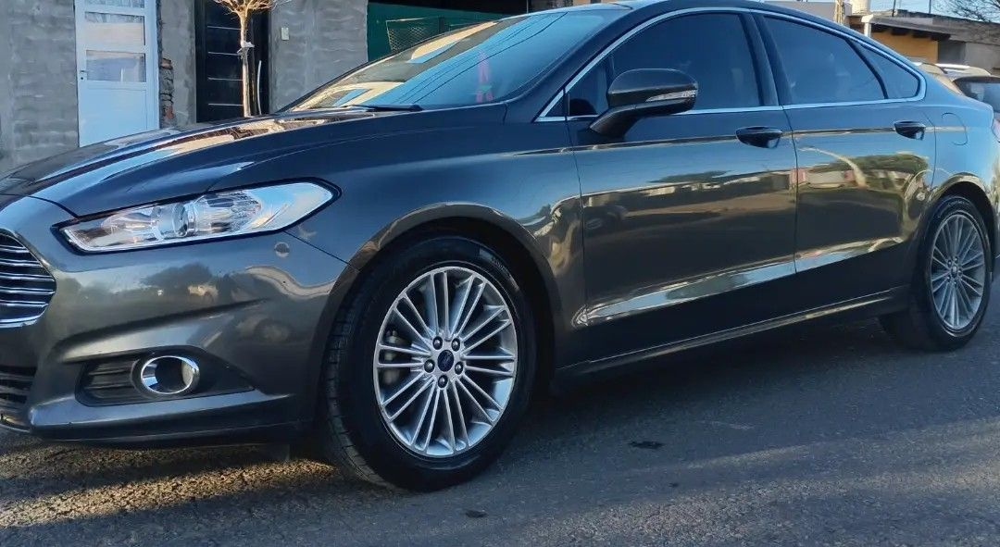
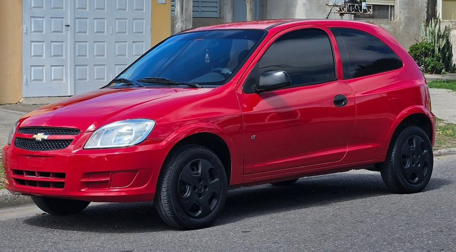
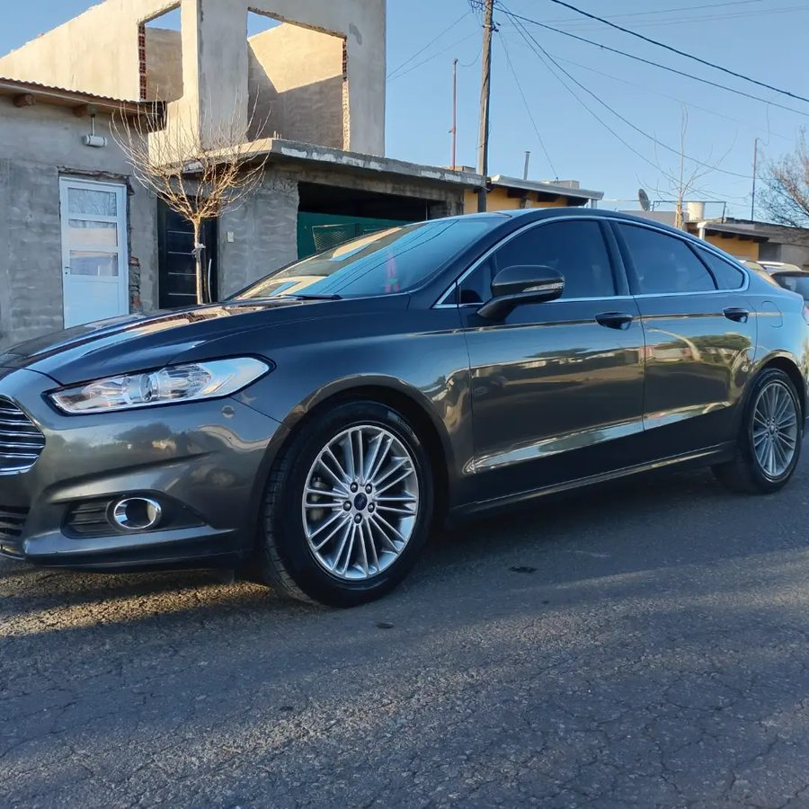

Lavado Premium
Un lavado cuidadoso, con espuma y atención a los detalles, incluso en pasarruedas y llantas.
- Limpieza profunda de la carrocería
- Cuidado de llantas y pasarruedas
- Terminación prolija y detallista

Lauty Detailing
El cuidado de cada detalle marca la diferencia.

Lauty Detailing
Trabajamos para realzar la estética y el cuidado de tu vehículo.
Lauty Detailing
Descubrí las opciones de detailing para tu automóvil.

Lauty Detailing es un emprendimiento de detailing y estética automotriz en Villa Constitución. Trabajamos la pintura, el interior y las ópticas con paciencia y atención para que tu vehículo luzca cuidado por dentro y por fuera.
Primero escuchamos qué necesitás y después recomendamos el servicio adecuado para el estado de tu auto.
Conocé másCuatro servicios para que tu vehículo recupere presencia.
Un lavado cuidadoso, con espuma y atención a los detalles, incluso en pasarruedas y llantas.

Limpieza de butacas, alfombras, plásticos y rincones del habitáculo.

Ayuda a recuperar brillo y uniformidad en la pintura, según el estado del vehículo.

Una capa protectora que mejora el acabado y facilita el mantenimiento.
Un auto bien cuidado se nota en la pintura, en las ópticas y en cada rincón. Estos son trabajos reales de Lauty Detailing.
Revisamos cada zona del vehículo, también las que no se ven a simple vista.
Servicios pensados para que tu auto luzca cuidado y bien presentado.
Cada vehículo se trabaja con tiempo y atención, sin apuros.
Procesos propios para cada servicio y asesoramiento según el estado del auto.